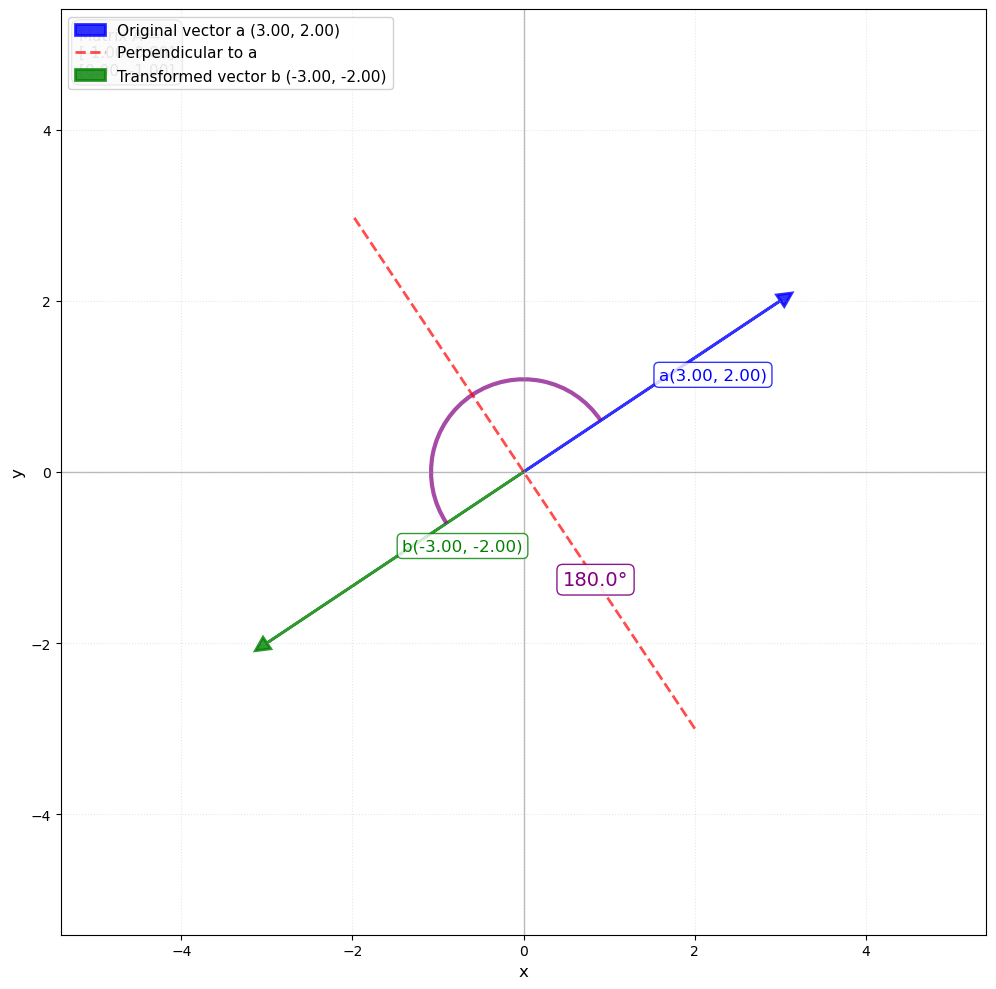
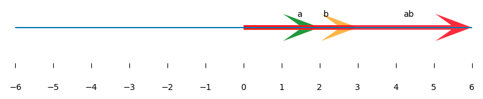
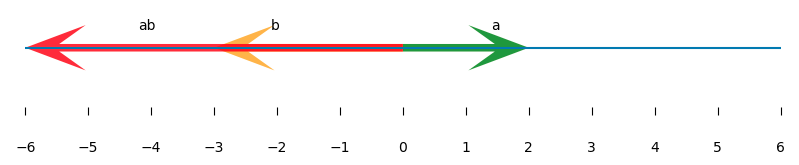
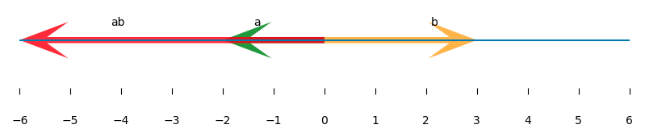
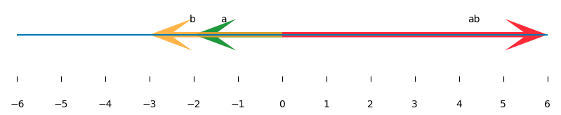
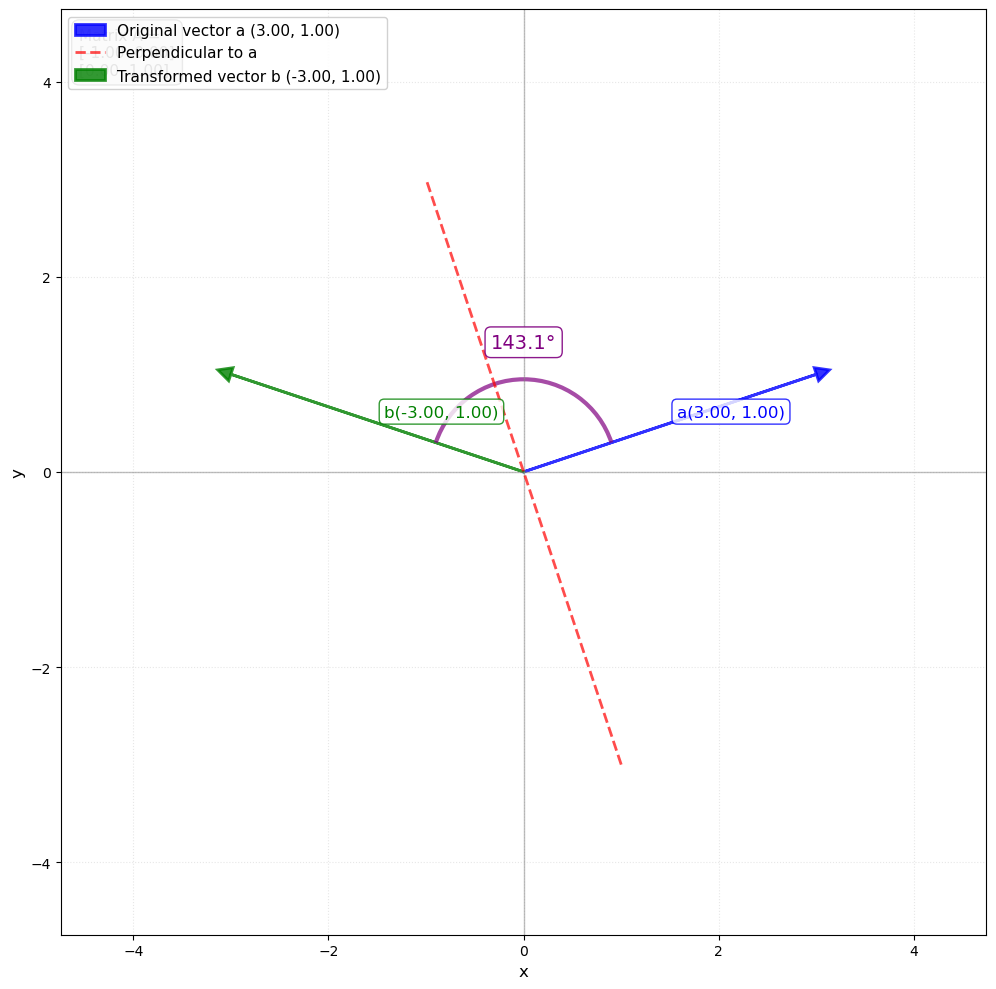
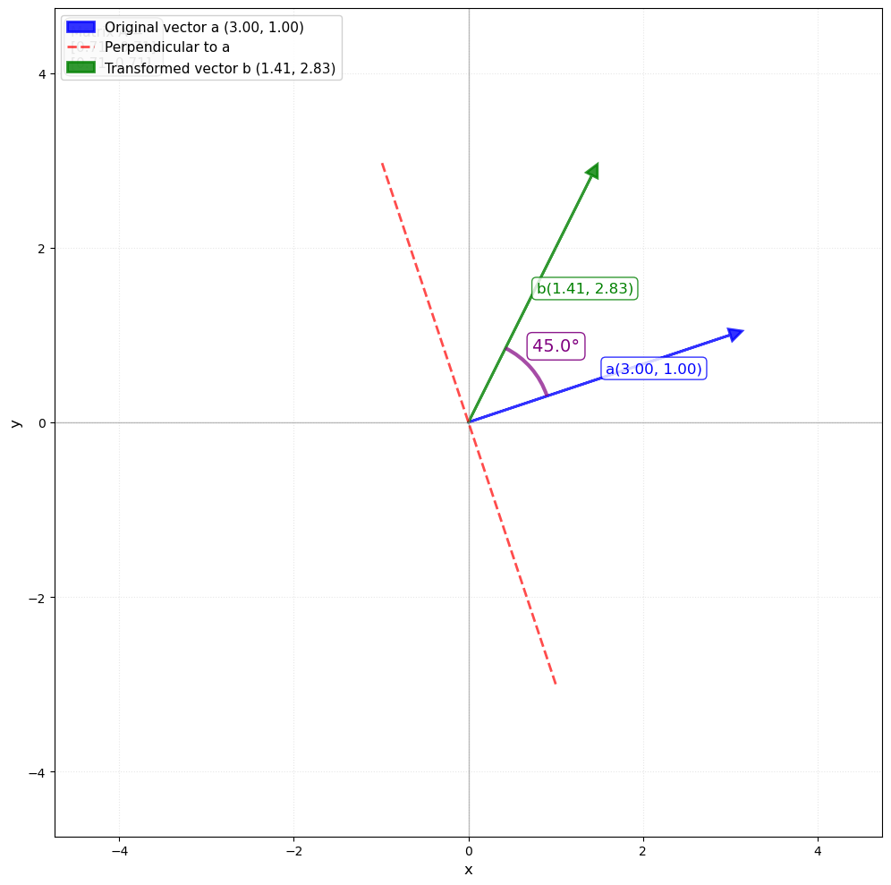

Positive definite matrix
Positive definite matrices carry the same interpretation of being ‘positive’ as a real positive number and this post will show how the idea of ‘positiveness’ extends from a real number to matrices.
Positiveness
Let’s start with our understanding of the positive real numbers to formulate the idea of ‘positiveness’.
Let’s say we have a positive real number m. If we multiply this with another non-zero real number (e.g., x), then we know that
- \(mx\) will be positive if \(x\) is positive
- \(mx\) will be negative if \(x\) is negative
In mathematical expression, this can be nicely summarized into a single condition
if m is positive then xmx > 0
To understand it, let’s consider both cases of x (positive and negative) one by one
- If \(x\) is positive then \(xmx\) = (\(x\))(\(mx\)) = (+)(+) = +
- If \(x\) is negative then \(xmx\) = (\(x\))(\(mx\)) = (-)(-) = +
So our condition (\(xmx\) > 0 for positive m) captures both cases nicely and we can use this condition for the idea of ‘positiveness’.
Tip
So we can say that a matrix M is positive definite if for any vector \(x\) it holds the following condition. \[ x^TMx > 0 \]
##Geometric Interpretation We got a mathematical expression which captures the idea of ‘positiveness’ that we can also extend to matrices. So, from the mathematical notation side, it is sufficient.
But what does it mean in a geometrical sense?
Let’s consider now a one-dimensional positive vector \(a\) (2) and another positive vector \(b\) (3). If we look at their element-wise multiplication, the result will be in the same direction as vector b (Figure 1).

If we consider negative b then the result will again be in the same direction as of vector b (Figure 2).

Tip
If \(a\) is positive then the resultant vector \(ab\) stays in the same side of \(b\).
Now, what happens if a is not positive?
In that case, no matter which b we take, our result (ab) will be in the opposite direction of b (Figure 3–4).


From these examples, we can develop this intuitive understanding that a vector a is positive only when it does not flip the direction of another vector b on multiplication.
\(a\) is positive if it does not flip \(b\) on multiplication.
Now let’s move to the case of a 2-dimensional vector. This is where things get exciting and interesting. If you are interested in visualizing matrices, then check this post for more information.
Lets take the following matrix M and vector x.
\[ M = \begin{bmatrix} -1 & 0 \\ 0 & 1 \end{bmatrix} \]
\[ \mathbf{x} = \begin{bmatrix} 3 \\ 2 \end{bmatrix} \]
The resultant vector from Mx will be [-3, -2]. Geometrically vector x, and Mx can be represented as below.
We can clearly see that when the M transformation is applied on x (or Matrix M and x are multiplied), it flips the direction of x. Hence, we can conclude that M is a negative definite matrix. This was a straightforward case.
But how to interpret this property of ‘flipping the direction’ for the following cases?


You might have already figured it out by now that the red line — which is perpendicular to original x — could be used as a criterion.
So if x and Mx point on different sides of red line then it would be considered as a flip of direction.
Or we can say that as long as Mx stays in the same side or forms an angle between +90 degrees and -90 degrees with x then M is positive definite matrix.
Vector multiplication of two vectors x and y can be written using the following expression.
\[\mathbf{x} \cdot \mathbf{y} = \|\mathbf{x}\| \|\mathbf{y}\| \cos(\theta)\]
The result from this expression primarily depends on cosine and it is positive when theta is between -90 and +90. So our Mx forms an angle between -90 degrees to 90 degrees with vector x then the following will hold. \[x^Ty > 0\]
\[ x^TMx > 0 \]
This is the same expression that we saw in the start :-)
Conclusion
Positive definite matrices are just the matrix world’s way of saying “nothing gets flipped.” Once you see it geometrically, it sticks. They have some really wonderful properties too, which I’ll cover in the next post.
References
- https://math.stackexchange.com/questions/3398318/the-intuition-behind-the-definition-of-the-definiteness-of-a-matrix
- https://gregorygundersen.com/blog/2022/02/27/positive-definite/